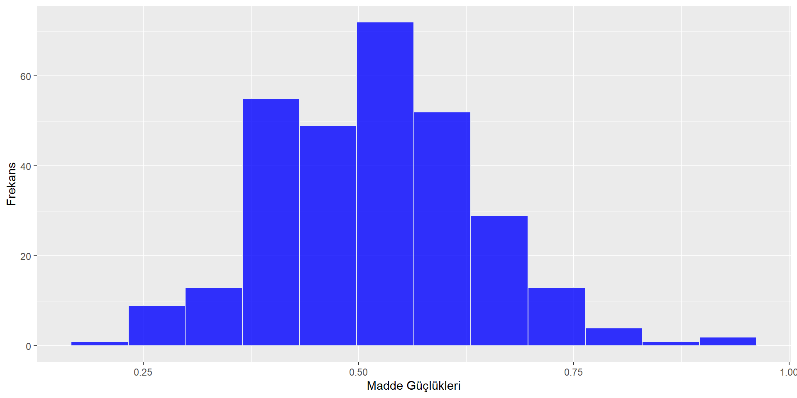

Amacın belirlenmesi
Kapsamın belirlenmesi
Maddelerin yazılması ve düzeltilmesi
Ön uygulama
Madde analizi ve madde seçimi
Son testin oluşturulması, uygulanması ve puanlanması
Test geliştirmenin amacı önceden saptanan özelliklere uygun bir ölçme aracı geliştirmektir.
Bunun gerçekleştirilmesi için maddelerin sayısal özellikleri saptanır.
Maddelerin sayısal özellikleri ve testin özellikleri arasında matematiksel ilişkiler kurulur.
Bu ilişkilerden yararlanılarak maddelerin seçilmesi işlemleri yapılır.
Deneme uygulamasında yapılacak çalışmalar;
Deneme grubunun seçilmesi
Deneme formunun hazırlanması
Deneme formunun uygulanmasıdır.
Öncelikle deneme grubu testin uygulanacağı esas gruba benzer olmalıdır.
Deneme grubunun oluşturulmasında dikkate alınacak diğer ilke, grubun, ölçme konusu özellik yönünden, mümkün olduğu kadar normale yakın dağılım göstermesidir.
Deneme uygulamasının diğer bir amacı da teste verilecek sürenin tahmin edilmesidir.
Deneme uygulamasında önemli bir konu bu uygulamaya katılacak cevaplayıcı sayısıdır.
Farklı madde analizi yöntemleri olduğu için, cevaplayıcı sayısının da madde analizi metotlarına göre saptanması uygundur.
Ölçme araçlarının (testlerin, ölçeklerin, vb.) kendi başına puanlanabilen en küçük birimi maddedir.
Ölçme sonuçlarına dayalı olarak bir testi oluşturan maddeler analiz edilerek, maddelerin testten çıkartılıp çıkartılmamasına karar verilir.
Madde analizinde kullanılan 2 temel indeks vardır:
Madde güçlük indeksi: Her bir maddenin zorluk derecesini, uygun güçlük düzeyine sahip olup olmadığını gösterir.
Madde ayırıcılık indeksi: Her bir maddenin ölçülmesi istenen özelliği ne derece temsil ettiğinin derecesini verir.
Cevaplayıcıların testi herhangi bir şekilde yardım almadan sadece kendilerinin cevaplamaları sağlanmalıdır.
Cevaplayıcıların teste güdülenmeleri sağlanmalı, testi gelişi güzel cevaplamaları engellenmelidir.
Sınav salonun fiziki şartları sınava elverişli olmalıdır.
Uygulayıcının sınav uygulama kurallarına uyması sağlanmalıdır.
Esas teste konulacak maddelerin seçilmesi işi
deneme uygulamasından elde edilen cevapların puanlanmasını
bu puanlamadan elde edilen madde puanlarının analizini
analiz sonuçlarına dayalı olarak maddelerin seçimi çalışmalarını gerektirir.
Klasik test teorisi iki kategorili puanlama
doğru cevaplandırılan maddelerin 1;
yanlış cevaplandırılan, boş bırakılan ve birden çok cevapla cevaplandırılan maddelerin 0 ile puanlanması üzerine kurulmuştur.
İki kategorili puanlama çoktan seçmeli testlerde, doğru-yanlış testlerinde kullanılır. Kısa cevaplı testlerde de kullanılabilir.
Deneme grubundan elde edilen bilginin tümü kullanılır.
Bu yöntemde cevap kağıtları puanlandıktan sonra en yüksek puandan en düşüğe doğru sıraya konur. Daha sonra her madde için her puana ait toplam frekansın seçenekler üzerine dağılımını ve boş cevapların sayısını gösteren bir tablo hazırlanır.
Bu tablodaki frekanslardan yararlanılarak madde güçlüğü ve madde ayırıcılığı değerleri hesaplanır.
Bu yöntemde test puanları ölçüt, %27’lik üst ve alt gruplar ise ölçüt gruplarıdır.
Cevap kağıtları puanlanır. Denemeye katılan cevaplayıcı sayısının % 27si hesaplanır. Sıralanmış cevap kağıtlarından en yüksekten en düşüğe doğru grubun %27si kadar alınır. Aynı işlem en düşük puandan yukarı doğruda yapılır.
Her maddenin doğru yanlış ve boş cevaplar tablo haline getirilir. Bir madde için %27lik alt ve üst gruba giren cevap kağıtları üzerinde doğru yanlış ve boş cevapların sayısı bir tabloya yerleştirilir.
Madde güçlük indeksi ve ayırıcılık gücü indeksi tahmin edilir.
| Madde_1 | A | B | C | D* | E | TOPLAM |
|---|---|---|---|---|---|---|
| Ust Grup | 10 | 13 | 10 | 15 | 2 | 50 |
| Alt Grup | 22 | 10 | 10 | 5 | 3 | 50 |
| TOPLAM | 32 | 23 | 20 | 20 | 5 | 100 |
Madde güçlüğü \(p_{j}\)
Madde ayırıcılığı \(r_{jx}\)
Madde varyansı \(S_{x}^2\) ve Standart Sapması \(S_{x}\)
Madde güvenirliği \(r_{x}\)
Madde güçlük indeksi, iki kategorili puanlanan (1 veya 0 olarak puanlanan) bir madde için madde puanlarının ortalamasıdır.
Bir maddeyi doğru cevaplayan birey sayısının gruptaki tüm birey sayısına oranı olarak tanımlanır.
Diğer bir ifadeyle madde güçlük indeksi, bir maddenin dogru cevaplanma yüzdesidir.
Testi alan tüm öğrenciler bu maddeyi bilseydi, bu durumda madde güçlüğü:
Bu madde hiçbir öğrenci tarafından doğru cevaplanamasaydı, bu durumda madde güçlüğü:
Madde güçlüğünün orta değeri 0.50’dir.
Bu değer maddenin orta güçlükte (zorlukta) olduğunun göstergesidir.
Madde güçlüğü azaldıkça yani 0’a yaklaştıkça (bilemeyen sayısı arttıkça) madde zorlaşır, madde güçlüğü arttıkça yani 1’e yaklaştıkça (bilen sayısı arttıkça) madde kolaylaşır.
Bir testi oluşturan maddelerin güçlük indeksleri, testin güçlüğünü doğrudan etkiler.
Eğer testi oluşturan maddeler zor olursa, test zor bir test olacaktır.
Eğer testi oluşturan maddeler kolay olursa da test kolay bir test olacaktır.
Bir testin geniş ranjda bir puan dağılımına (tercihen normal dağılım) sahip olması için testin bütün güçlükteki soruları içermesi istenilen bir durumdur.
Eğer test geniş ranjda bir puan dağılımına sahip olmazsa, ölçülen özellik bakımından bireyler arası farklılıklara ilişkin bilgi sağlanamayacaktır.
Ölçülen özellik açısından bireyler arası farklılıkları ortaya çıkarmak başarı testleri için oldukça önemli bir konudur.
Başarı testini oluşturan maddelerin güçlük indekslerinin ortalamasının 0.50 olmasına ve bütün yetenek düzeylerine hitap edecek biçimde geniş bir ranjda değişim göstermesine dikkat edilmelidir.

\(p_{j} =\frac{\text{doğru cevaplayan ogrenci sayısı}}{\text{toplam ogrenci sayısı}}\)
\(p_{j} =\frac{\text{üst grupta + alt grupta doğru cevaplayan ogrenci sayısı}}{\text{toplam ogrenci sayısı}}\)
| Madde_1 | A | B | C | D* | E | TOPLAM |
|---|---|---|---|---|---|---|
| Ust Grup | 10 | 13 | 10 | 15 | 2 | 50 |
| Alt Grup | 22 | 10 | 10 | 5 | 3 | 50 |
| TOPLAM | 32 | 23 | 20 | 20 | 5 | 100 |
Bir testin, ölçmek için düzenlendiği hedeflerin uygun bir ölçüsü olduğu kabul edilirse, o testteki herhangi bir maddeye üst grupta doğru cevap verenler sayısının, alt grupta doğru cevap verenlerin sayısından büyük olması yani bu öğrencileri ayırt etmesi beklenir.
Testle ölçülmek istenen özelliğe sahip olanla sahip olmayanı ayırmak için kullanılan bir indekstir.
Ölçülmek istenen özelliğe sahip olan bireylerin, testte yer alan maddelere doğru yanıt vermesi, sahip olmayan bireylerin ise yanlış yanıt vermesi beklenir.
Madde puanları ile test puanları arasında hesaplanan korelasyon katsayısı madde ayırıcılık indeksini verir.
Bu indeksin değerinin artı olması, testteki belli bir maddeyi toplam puanı yüksek olanların toplam puanı düşük olanlardan daha fazla doğru cevapladığı anlamına gelir.
Bu indeksin değerinin eksi olması, testteki belli bir maddeyi toplam puanı düşük olanların toplam puanı yüksek olanlardan daha fazla doğru cevapladığı anlamına gelir.
Bu indeksin değerinin sıfır olması ise toplam puanı düşük olanlarla toplam puanı yüksek olanlar, testteki belli bir maddeyi eşit sıklıkta doğru cevaplamışlardır.
Bir maddenin bilenleri bilmeyenlerden ayırabilmesinin derecesini verir.
Madde ayırıcılığı, bir maddenin en önemli istatistiğidir. Maddenin güvenirliğinin bir ölçüsünü verir. Bu sebeple, bir maddenin teste alınıp alınmamasına karar verirken öncelikle madde ayırıcılığının yüksek olup olmamasına bakılır.
\(p_{j} =\frac{\text{ust grupta - alt grupta dogru cevaplayan ogrenci sayisi}}{(\text{toplam ogrenci sayisi})/2}\)
\(p_{j} =\frac{\text{ust grupta - alt grupta dogru cevaplayan ogrenci sayisi}}{\text{ust gruptaki ogrenci sayisi}}\)
üst ve alt gruptaki tüm öğrenciler bu maddeyi doğru bilseydi, bu durumda madde ayırıcılığı: 50-50/50=0
üst ve alt gruptaki hiçbir öğrenci bu maddeyi doğru cevaplayamasaydı, bu durumda da madde ayırıcılığı: 0-0/50=0
Tüm öğrencilerin bildiği ya da hiç bir öğrenci tarafından bilinmeyen bir madde, bileni bilmeyenden ayıramamaktadır. Bu tür bir madde hiçbir şekilde teste alınmak istenmez.
üst gruptaki tüm öğrenciler maddeyi doğru cevaplarken, alt gruptaki hiçbir öğrenci doğru cevap verememiş olsaydı , bu durumda madde ayırıcılığı: 50-0/50=1 (madde ayırıcılığının alabileceği maksimum değer).
üst gruptaki öğrencilerin hiç biri maddeyi doğru cevaplayamazken, alt gruptaki tüm öğrenciler maddeye doğru cevap vermiş olsaydı , bu durumda madde ayırıcılığı: 0-50/50=-1 (madde ayırıcılığının alabileceği minimum değer)
| \(r_{jx}\) | Anlamı |
|---|---|
| \(r_{jx} \ge 0.30\) | madde oldukça iyi çalışmaktadır. Teste olduğu gibi konulabilir |
| \(0.20 \le r_{jx} \le 0.29\) | madde düzeltilmek suretiyle kullanılabilir. |
| \(0 \le r_{jx} \le 0.19\) | madde hiç kullanılmamalı veya tamamen düzeltilerek kullanılmalıdır. |
| \(-1 \le r_{jx} < 0\) | madde ters işlemektedir. |
Düşük düzeyde ayırıcılık gücüne sahip maddelerin mutlaka incelenmesi gerekir.
Bu maddelerin ayırıcı olmamasının sebepleri aşağıdaki şekilde sıralanabilir:
Sorunun iyi ifade edilememesi
Farklı yorumlara açık olması
Maddenin ölçülen özellik dışında başka bir özelliği ölçmesi
Madde ayırıcılık indeksi aynı zamanda bireylerin belli bir özelliği ölçmek için yazılmış maddelere verdikleri tepkilerin (cevapların) bu özelliği temsil eden testin tümünden elde edilen puanlarla ne derece ilişkili olduğunu ifade eden önemli bir indekstir.
Eğer maddeye verilen tepkilerle (madde puanları) testin tamamından elde edilen puanlar arasında ilişki yoksa ve ya çok zayıfsa maddenin testle ölçmek istenen özelliği ölçtüğü şüphelidir.
Bu indeksin değerinin artı olması, maddenin testle ölçülmek istenen özelliği ölçtüğü anlamına gelir.
Bu indeksin değerinin sıfır olması,** maddenin testle ölçülmek istenen özelliği ölçmediği anlamına gelir.**
Bu indeksin değerinin eksi olması, ise maddenin testle ölçülen özellikten başka bir özelliği ölçtüğü şeklinde yorumlanır.
Madde ayırıcılığının olabildiğince yüksek (1’e yakın) olması,
Madde güçlüğünün orta düzeyde (0.50 ve civarı) olması,
Çeldiricileri işaretleyen üst gruptaki öğrenci sayısının alt gruptaki öğrenci sayısından az olması,
Çeldiricileri işaretleyen öğrenci sayısının olabildiğince dengeli bir dağılım göstermiş olması istenir.
| Madde_1 | A | B | C | D* | E | TOPLAM |
|---|---|---|---|---|---|---|
| Ust Grup | 10 | 13 | 10 | 15 | 2 | 50 |
| Alt Grup | 22 | 10 | 10 | 5 | 3 | 50 |
| TOPLAM | 32 | 23 | 20 | 20 | 5 | 100 |
| Madde_2 | A | B | C* | D | E | TOPLAM |
|---|---|---|---|---|---|---|
| Ust Grup | 0 | 0 | 100 | 0 | 0 | 100 |
| Alt Grup | 25 | 25 | 0 | 25 | 25 | 100 |
| TOPLAM | 25 | 25 | 100 | 25 | 25 | 200 |
| Madde_3 | A | B | C* | D | E | TOPLAM |
|---|---|---|---|---|---|---|
| Ust Grup | 4 | 6 | 80 | 6 | 4 | 100 |
| Alt Grup | 20 | 22 | 18 | 19 | 21 | 100 |
| TOPLAM | 24 | 28 | 98 | 25 | 25 | 200 |
| Madde_4 | A | B | C* | D | E | TOPLAM |
|---|---|---|---|---|---|---|
| Ust Grup | 18 | 19 | 20 | 26 | 17 | 100 |
| Alt Grup | 8 | 9 | 10 | 60 | 13 | 100 |
| TOPLAM | 26 | 28 | 30 | 86 | 30 | 200 |
| Madde_5 | A | B | C* | D | E | TOPLAM |
|---|---|---|---|---|---|---|
| Ust Grup | 21 | 18 | 22 | 19 | 20 | 100 |
| Alt Grup | 19 | 23 | 20 | 17 | 21 | 100 |
| TOPLAM | 40 | 41 | 42 | 36 | 41 | 200 |
| Madde_6 | A | B | C | D | E | TOPLAM |
|---|---|---|---|---|---|---|
| Ust Grup | 10 | 50 | 18 | 10 | 12 | 100 |
| Alt Grup | 35 | 15 | 25 | 15 | 10 | 100 |
| TOPLAM | 45 | 65 | 43 | 25 | 22 | 200 |
| Madde_7 | A | B | C | D | E | TOPLAM |
|---|---|---|---|---|---|---|
| Ust Grup | 35 | 15 | 30 | 10 | 10 | 100 |
| Alt Grup | 10 | 50 | 18 | 10 | 12 | 100 |
| TOPLAM | 45 | 65 | 48 | 20 | 22 | 200 |
| Madde_8 | A | B | C | D | E | TOPLAM |
|---|---|---|---|---|---|---|
| Ust Grup | 15 | 50 | 18 | 16 | 1 | 100 |
| Alt Grup | 35 | 15 | 25 | 21 | 4 | 100 |
| TOPLAM | 50 | 65 | 43 | 37 | 5 | 200 |
| Madde_9 | A | B | C | D | E | TOPLAM |
|---|---|---|---|---|---|---|
| Ust Grup | 28 | 22 | 20 | 18 | 12 | 100 |
| Alt Grup | 10 | 50 | 18 | 10 | 12 | 100 |
| TOPLAM | 38 | 72 | 38 | 28 | 24 | 200 |
Madde varyansı ve standart sapması, bir maddeye verilen cevapların (0-1 puanlarının) değişiminin derecesini gösteren değerlerdir.
\[ S_{x}^2 = p_{j}(1- p_{j}) \]
\[ S_{x} = \sqrt {p_{j}(1- p_{j})} \]
Madde varyansının minumum değeri 0, maksimum değeri ise 0.25
\[ 0 \le S_{x}^2 \le 0.25 \]
Madde stndart sapmasının minumum değeri 0, maksimum değeri ise 0.5
\[ 0 \le S_{x} \le 0.5 \]
Her bir maddenin güvenirliği, maddenin ayırıcılığı ve standart sapmasıyla doğru orantılı olarak artar.
\[ r_{x} = r_{jx} *S_{x} \]
Maddenin ayırıcılığı doğrudan güvenirliğini arttıran bir özelliktir.
Bu sebepledir ki madde ayırıcılığının olabildiğince yüksek olması istenilen bir özelliktir.
Madde standart sapması en yüksek değerine madde güçlüğü 0.50 olduğunda ulaşmaktadır.
Bir testin ortalama güçlüğü o testin maddelerine ait güçlük indeksi değerlerinin toplamının madde sayısına bölünmesiyle elde edilir.
Örnek olarak verilen testin ortalama güçlüğünü bulunuz?
Test geliştirmede madde analizi yapıldıktan sonra sıra maddelerin seçilmesine gelir. Madde seçmede bazı noktalara dikkat etmek gerekir.
Madde seçiminde ilk amaç testin güvenirliğini yükseltmek yani puanların genişçe dağılmasını sağlamak ise ayırt etme indeksi en büyük olan maddeler seçilmelidir.
Ayırt etme indeksi 0,30 ve daha büyük olan yeterince madde varsa, bunlar arasından istenilen güçlükte olanlar seçilir.
Seçilecek maddelerin güçlük dereceleri maddelerin oluşturacağı testin kullanılış maksadına göre belirlenmelidir.
Ayırt etme indeksi yüksek maddelerin seçilmesi testin güvenirliğini artırabilir. Ne var ki, bir test geliştirici bazen güvenirliğini artırmaya çalıştığı bir testin kapsam geçerliliğini düşürebilir. Bu yüzden yeni bir test oluştururken belirtke tablosuna bağlı kalmak gerekir.